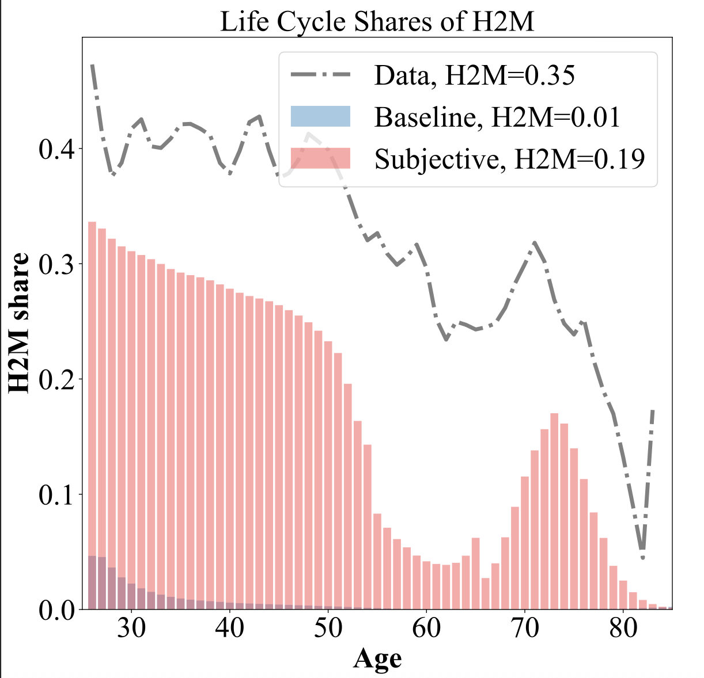

Working paper
(with Xincheng Qiu, William Du and Adrian Monninger )
Perceived versus Calibrated Income Risks in Heterogeneous-agent Consumption Models (Job Market Paper)[Working Paper][BoC SWP][Slides][AI Podcast][Bib]
Details
- Stylized facts on perceived income risks revealed in density surveys in comparison to the estimated income risks used in incomplete market macro models.
- An incomplete-market life-cycle model with subjective/heterogeneous income risks calibrated from the survey data.
- Heterogeneity in income risks as a new observable factor accounting for wealth inequality.
- Lower perceived risks in the survey than conventional estimates help account for low-liquid-asset-holdings or hand-to-mouth agents.
- A 3-min video presentation of the JMP version

How Do Agents Form Macroeconomic Expectations? Evidence from Inflation Uncertainty[Working Paper][BoC SWP][Slides][Bib]
Details
- Cross-moment estimates of various workhorse theories of expectation formation.
- Use of high moments such as forecast uncertainty available from density forecast.
- Expectations data contains useful information about inflation dynamics itself.
Details
- Households with higher inflation expectations also expect higher unemployment rates.
- The association between two expectations is unlikely driven by common signals, but by subjective models.
- Inflation rates and news have effects on expectations across domains but unemployment news doesn't have such effects.
Publications
Details
- A survey of the literature on epidemiological models of how social interactions drive belief and expectations in economics.
- See a recent presentation on this topic
Details
- Evidence for social network as a potential propagation mechanism of aggregate consumption response to the pandemic.
- Counties more socially connected to regions hardly hit by the pandemic saw a bigger drop in consumption.
- Consumption categories relied upon social contact saw the biggest responses.
Work in progress
Seeing the Economy through Colored Glasses: Partisanship in Macro and (not in) Micro Expectations[Working Paper][Bib]
(with Adrian Monninger and Kyung Woong Koh)
Reading between Lines: Measuring Macroeconomic Narratives from Texts using Large Language Models [Bib]
(with Chenyu (Sev) Hou and Jiannan (Jay) Jiang)
Perceived Delinquency Risks and Realized Outcomes
Consumption Spending before and after Unemployment
(with Michael Boutros and Nathanael Vellekoop)
Experienced Volatility, Subjective Attribution, and Perceived Income Risks